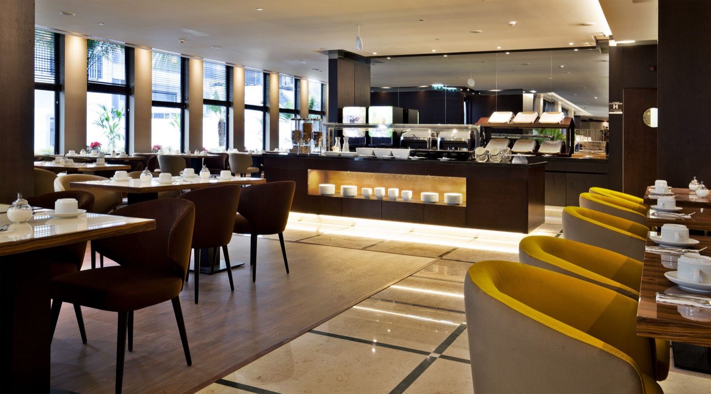
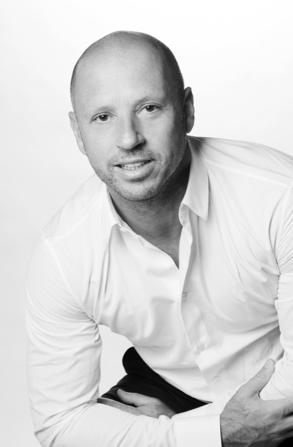

Local teams
- French-speaking
- Based close to the production sites
- On the workshop floor, not remote

A drawing only becomes a piece of furniture if someone decides on the sections, chooses the workshop, approves the prototype and answers for the deadline. That is our job.
PHB70 was founded by Philippe Boccara, a French entrepreneur based in New York with recognised expertise in manufacturing and distribution networks. His approach, built up across several international companies, favours short supply chains to optimise costs and lead times — in the service of hospitality and restaurant professionals.

Goreti is the link between the client and the workshop. She turns the brief into precise instructions for production, follows every stage through to delivery and reports on progress without waiting to be asked — in French, Portuguese or English, depending on which side of the table she is speaking to. A client who calls always reaches someone who knows their file.
Bruno runs operations and production. He selects the workshops piece by piece, then stays on the production floor to decide on a section, a colour, a joint — and have it corrected before the series. He keeps the schedules, constantly looks for the technical solution that saves time without compromising execution, and personally inspects every batch through to delivery.
Laure starts from how a space is used before thinking about form: the way you walk into a room, where you put down a suitcase, what the light does to materials over the course of the day. She guides clients and their architects in choosing woods, fabrics and finishes, composes the atmospheres and makes sure every piece designed finds its rightful place in the setting. She is the link between the decorative intent and what the workshop can actually make.
Our local teams are French-speaking and live close to the production sites. Together with our in-house design office and our Luxembourg team, they allow us to handle everything in-house.
Plans, mood boards or just a hunch: we can tell you very early on what is feasible.
Contact us